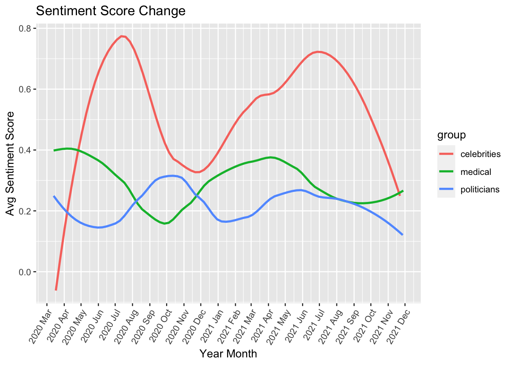
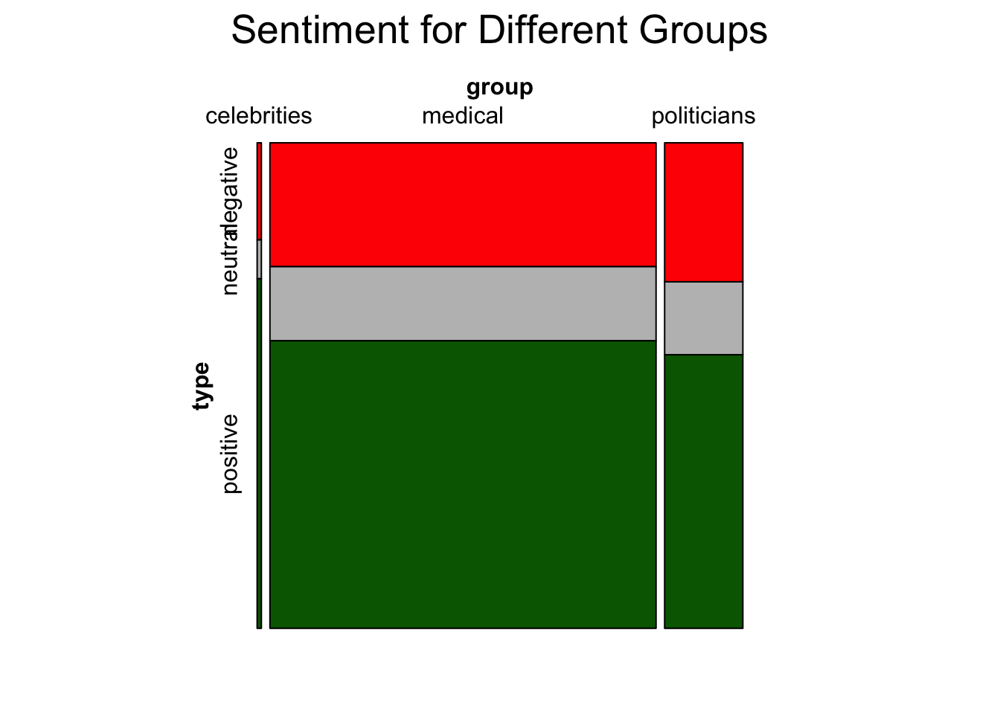
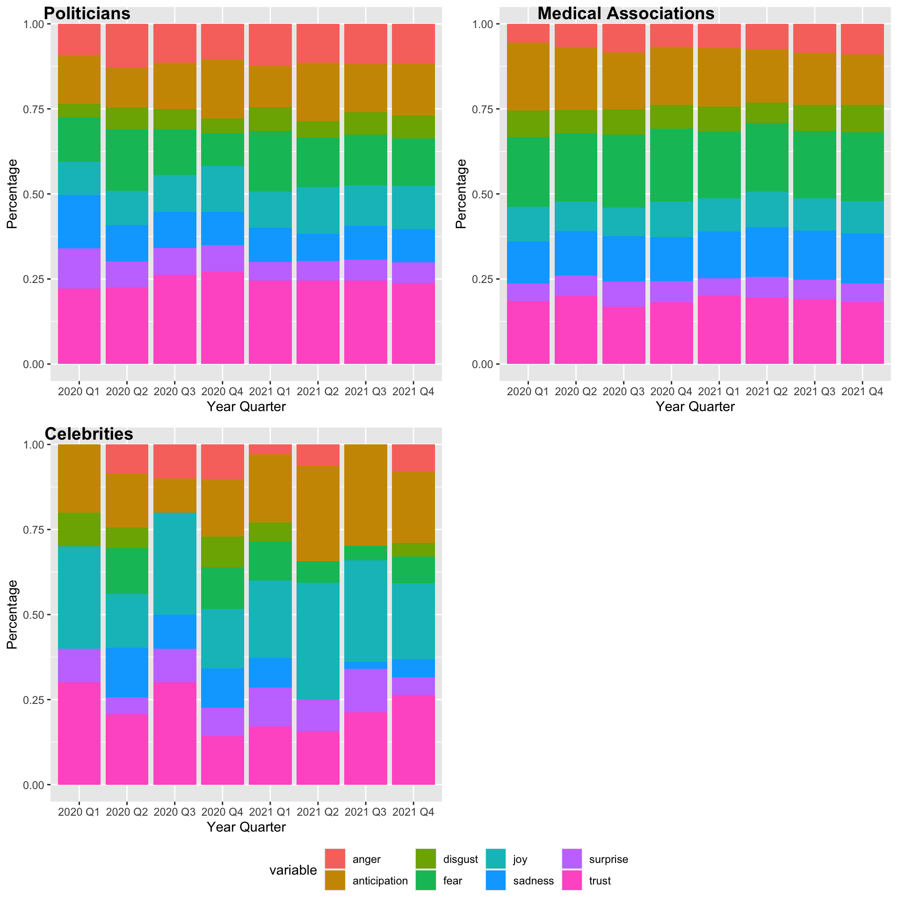
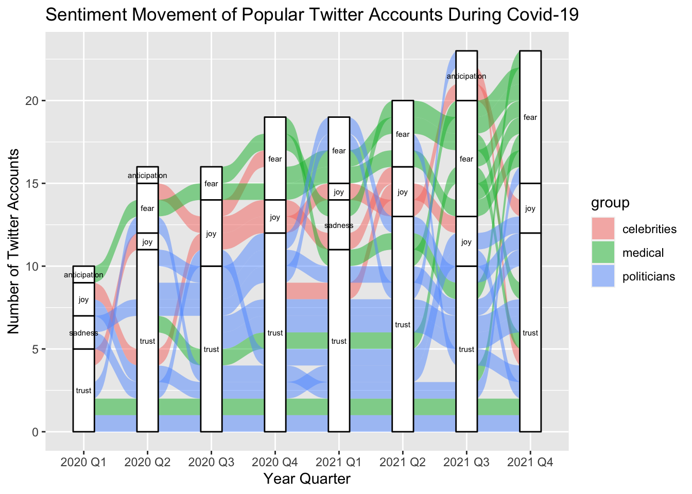
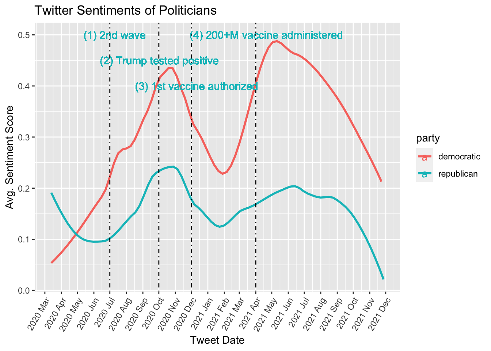

Chapter 5 Results
library(tidyverse)
library(ggplot2)
library(tidytext)
library(textdata)
library(dplyr)
library(ggpubr)
library(vcd)
library(scales)
library(ggalluvial)5.1 Data Exploration
Before diving into the sentiment analysis, we wanted to visualize some of the key metrics, namely the number tweets and the number of followers, to better understand the data we are working with, check the validity of data, and think about how they may impact the result of our analysis. As aforementioned in previous sections, the groups we are interested in exploring are celebrities, medical, and politicians, and we will be exploring the tweets posted by the most popular ten accounts from each group.
5.1.1 The Number of Covid-19-related Tweets for Different Groups
df <- read_csv("./resources/data_combined_filtered_sentiment.csv")
df$created_at <- as.Date(df$created_at)
df$yearqtr <- paste(
format(df$created_at, "%Y"),
sprintf("%01i", (as.POSIXlt(df$created_at)$mon) %/% 3L + 1L),
sep = " Q")
df_qtr <- df %>% group_by(yearqtr) %>% count(group)
ggplot(data=df_qtr, aes(x=yearqtr, y=n, fill=group)) +
geom_bar(position = "dodge", stat = "identity") +
ggtitle("The Number of Covid-19 Tweets by Group") +
labs(x = "Year Quarter", y = "Number of tweets")
Key observations and insights are as follows:
The number of tweets are low in 2020 Q1 because there are far less data represented in this period. The earliest data collected is from March 2020, and therefore our data do not include Jan-Feb 2020 tweets.
We can observe that the number of tweets posted by the medical group was relatively low at the beginning of the pandemic but started increasing rapidly and far exceeded the number of posts by the rest groups as time went on. This seems reasonable since the medical may not have had enough valid information to share with the public at first but may have ascertained more information about Covid-19 with time that can be shared with the public.
We acknowledge that the number of tweets by medical spiked since 2021 Q3. We cannot identify the exact cause. However, we do not believe that this would negatively impact our analysis. Also, the data imbalance between group is not a significant issue in our analysis since the sentiment of each group’s tweet is calculated on its own.
5.1.2 The Number of Followers for Different Groups
We also wanted to look at the number of followers by each group.
df_followers <- df %>% group_by(group) %>% summarise(followers_count = sum(followers_count))
ggplot(df_followers, aes(x=reorder(group, -followers_count), y= followers_count/1000000000)) +
geom_bar(stat='identity', fill="lightblue") +
scale_y_continuous(labels = comma) +
ggtitle("Twitter Followers") +
ylab("Followers Count (in billion)") +
xlab("Group") +
geom_text(aes(label=comma(followers_count)), vjust=2)
The number of followers is similar between politicians and medical, but celebrities’ followers are far fewer. This may represent that the degree of influence is different for each group. However, we do not foresee this as a significant issue for our analysis since our analysis focuses on the sentimental reactions of those groups rather than the influence of those groups.
5.2 What were the sentimental reactions of different groups to Covid-19 news?
In this subsection, we dive into sentiment analysis and visualization. The main purpose is to compare the sentimental reactions among different groups and analyze the changes across time.
5.2.1 The Change of Sentiments (Positive/Negative) for Different Groups
As part of the sentiment analysis, we first visualized the change in sentiments over time.
date_group <- df %>% group_by(created_at, group)
avg <- date_group %>% summarise(avg_sentiment = mean(sentiment_score))
ggplot(data=avg, aes(x=created_at, y=avg_sentiment, color=group)) +
geom_smooth(method = "loess", span = .5, se = FALSE) +
scale_x_date(date_labels = "%Y %b", date_breaks = "1 month") +
theme(axis.text.x=element_text(angle=60, hjust=1)) +
ggtitle("Sentiment Score Change") +
labs(x="Year Month", y="Avg Sentiment Score")
Score above 0 is generally associated with positive sentiment and below 0 with negative sentiment. Score 1 and -1 are the most extreme values for positive and negative sentiment, respectively. We can observe that the scores for posts by all groups are generally above 0 over the timeline of our analysis which indicates that tweets posted leaned to be positive on average. However, since we are looking at average scores, we cannot conclude that all posts were positive. To investigate this further, we will look at more visualizations below to expand the positive/negative sentiment into more detailed categories. Key observations and insights from this graph are as follows:
It is noteworthy that the sentiment score of celebrities generally move in the same direction as the medical’s while politicians’ score move in the opposite direction of the medical’s.
The celebrities’ score change is much more dramatic than the medical’s, and celebrities’ sentiment seem to be the most positive among all groups’.
Although medical’s and politicians’ sentiment seem to be fluctuating quite a bit because the graph looks that way, but as will be shown in section 5.2.3, the change is not dramatic if we take into account the actual score values.
Below, we will introduce a more granular definition of sentiments instead of using a binary defintion – either positive or negative.
5.2.2 Mosaic Plot
df_mosaic <- df %>% mutate(type = case_when(
sentiment_score > 0.01 ~ "positive",
sentiment_score < -0.01 ~ "negative",
TRUE ~ "neutral"))
mosaic(type ~ group, direction = c("v", "h"), main = "Sentiment for Different Groups", df_mosaic, highlighting_fill = c("red","grey","darkgreen"))
We introduced a third sentiment “neutral” and created an overall sentiment mosaic graph. In this view, we look at the overall sentiment score and compare the proportion of the overall sentiment (positive, neutral, and negative) among groups instead of looking at the changes across time. Key observations and insights are as follows:
As we noted in the data exploration section, the number of tweets posted by medical is significantly larger than the others’. Therefore, the medical group takes the majority of the space in the mosaic plot.
To our surprise, the celebrities’ sentiment is not as positive as depicted in the section 5.2.1. Rather than having a large positive score, it was the small negative score that propped up celebrities’ sentiment score that made their score look the most positive.
In section 5.2.1., the sentiments of politicians and medical seemed to be moving in the opposite directions across time. However, their overall score from this graph is similar (although Medical has slightly higher proportion for positive).
5.2.3 Stacked Barplot
df_stack <- read_csv("./resources/data_combined_filtered_sentiment.csv")
df_stack$created_at <- as.Date(df_stack$created_at)
df_stack$yearqtr <- paste(
format(df$created_at, "%Y"),
sprintf("%01i", (as.POSIXlt(df$created_at)$mon) %/% 3L + 1L),
sep = " Q")
df_stack <- df_stack %>% select(c(group, yearqtr, joy, trust, anticipation, sadness, fear, anger, surprise, disgust))
df_stack[is.na(df_stack)] <- 0
df_p <- df_stack %>% filter(group == "politicians")
df_m <- df_stack %>% filter(group == "medical")
df_c <- df_stack %>% filter(group == "celebrities")
df_p_qtr <- df_p %>% group_by(yearqtr) %>% dplyr::summarise(across(where(is.numeric), sum))
df_m_qtr <- df_m %>% group_by(yearqtr) %>% dplyr::summarise(across(where(is.numeric), sum))
df_c_qtr <- df_c %>% group_by(yearqtr) %>% dplyr::summarise(across(where(is.numeric), sum))
sent_cols <- c("joy", "trust", "anticipation", "sadness", "fear", "anger", "surprise", "disgust")
sents_p <- df_p_qtr %>%
gather(variable, value, -yearqtr)
sents_m <- df_m_qtr %>%
gather(variable, value, -yearqtr)
sents_c <- df_c_qtr %>%
gather(variable, value, -yearqtr)
plot_p <- ggplot(sents_p, aes(fill=variable, y=value, x=yearqtr)) +
geom_bar(position="fill", stat="identity") + xlab("Year Quarter") + ylab("Percentage")
plot_m <- ggplot(sents_m, aes(fill=variable, y=value, x=yearqtr)) +
geom_bar(position="fill", stat="identity") + xlab("Year Quarter") + ylab("Percentage")
plot_c <- ggplot(sents_c, aes(fill=variable, y=value, x=yearqtr)) +
geom_bar(position="fill", stat="identity") + xlab("Year Quarter") + ylab("Percentage")
figure <- ggarrange(plot_p, plot_m, plot_c,
labels = c("Politicians", "Medical Associations", "Celebrities"),
common.legend = TRUE, legend="bottom",
ncol = 2, nrow = 2)
figure
We further divide up the sentiment categories to more granular eight levels: “joy”,“trust”,“anticipation”,“sadness”,“fear”,“anger”,“surprise”,“disgust”. We created a stacked barplot to show the change of sentiment across time for each group.
Medical’s sentiment do not change much across time relative to other groups’ sentiment change. Sentiments like “anticipation”, “fear”, and “trust” comprise the biggest portions. It is notable that “fear” takes up as much portion as “trust” unlike other groups whose “fear” to do not take up as much portion as “trust”.
Celebrities’ sentiment change the most relatively speaking. The level of trust seem to fluctuate across time. Unlike medical, fear is not one of the biggest component. This is consistent with the findings from section 5.2.2 that the negative sentiment is relatively low for celebrities. Sentiments like “joy”, “anticipation”, and “trust” seem to be its biggest components.
The most dominant sentiment for politicians seems to be “trust” across time. Politicians were suprised at the beginning of the outbreak as can be shown in the bigger purple box in 2020 Q1. But as time goes on, “surprise” takes up less portion relative to other sentiments.
We noticed that the stacked barchart, while useful in seeing the composition change across time, is not ideal for tracking how sentiments change across time for specific persons. Therefore, we resorted to an alluvial diagram to better understand how individual (or more accurately group) sentiment change over time.
5.2.4 Alluvial Diagram
sentiment <- c("joy","trust","anticipation","sadness","fear","anger","surprise","disgust")
df_alluvial <- df
df_alluvial[,sentiment][is.na(df[, sentiment])] <- 0
# df[] <- 0
df_alluvial <- df_alluvial %>%
group_by(yearqtr, screen_name, group) %>%
summarise(joy = mean(joy),
trust=mean(trust),
anticipation=mean(anticipation),
sadness = mean(sadness),
fear = mean(fear),
anger = mean(anger),
surprise = mean(surprise),
disgust = mean(disgust))
df_alluvial$dom_sentiment <- colnames(df_alluvial)[max.col(df_alluvial[,sentiment], ties.method = "first")+3]
df_alluvial %>% ggplot(aes(x = yearqtr,
stratum = dom_sentiment,
alluvium = screen_name,
label = dom_sentiment)) +
geom_alluvium(aes(fill=group)) +
geom_stratum() +
geom_text(stat = "stratum", size = 2) +
labs(y="Number of Twitter Accounts", x="Year Quarter") +
ggtitle("Sentiment Movement of Popular Twitter Accounts During Covid-19")
In lieu of creating an alluvia for every single tweet, we grouped the tweets by user accounts and quarterly date, and we take the mean of scores for each sentiment categories. Then, we chose the most dominant sentiment category for each user. Also, each user belongs to the three groups which are celebrities, medical, and politicians. As a result, some of the sentiment categories with low frequencies, such as anger, are not represented in the graph. These are the details we compromised to achieve a clearer big picture. We can clearly track changes of sentiments for each user with their belonging group.
The most of users in the “fear” strata are medicals, especially on the 2021 Q4. Also, the most of medical users end up feeling “fear”. We also observed that the proportion of “fear” is relatively large in medical group on the 5.2.3 stacked barplot, but here it is more significant that there is the difference of sentiments between medical group and the other groups. Furthermore, the number of users whose dominant sentiment is “fear” keeps increasing over time, though we expected that “fear” decreases because of vaccines for COVID-19 and decreasing trend of positive cases.
The most politicians’ dominant sentiments are “trust” as we expected. And there are few individuals who change their dominant sentiment over the time. In contrast, celebrities’ dominant sentiments keep changing from “fear” to “joy” to “sadness”.
The number of users that tweets about COVID-19 is increasing as COVID-19 is spreading. That is reflected on the height of axis for each quarter. Also, the number of medical users who tweet about COVID-19 increase as time goes by.
5.3 Deep dive into reactions of politicians:
We wanted to take a look at whether politicians’ sentimental reactions would depend on their political stance. In other words, would the Republican party members react differently to the same news than Democratic party members would? In order to answer this question, we mapped each of the 10 politicians to their associated political parties – all were part of either Republican or Democratic party.
5.3.1 Transition of Sentiments for Different Political Parties
republican = c('Mike_Pence','tedcruz','marcorubio','randpaul','MittRomney')
democratic = c('BarackObama','JoeBiden','HillaryClinton','KamalaHarris','AOC')
df_politicians <- df %>% mutate (party = if_else(tolower(screen_name) %in% tolower(republican), "republican", if_else(tolower(screen_name) %in% tolower(democratic),"democratic","NA"))) %>% filter(group == "politicians")
date_group <- df_politicians %>% group_by(created_at, screen_name, group, party)
avg <- date_group %>% summarise(avg_sentiment = mean(sentiment_score))
avg <- avg %>% filter(group == "politicians")
date_range <- which(avg$created_at %in% as.Date(c("2020-10-01", "2020-12-01", "2020-07-01", "2021-04-01")))
ggplot(data=avg, aes(x=created_at, y=avg_sentiment, color=party)) +
geom_smooth(method = "loess", span = .5, se = FALSE) +
scale_x_date(date_labels = "%Y %b", date_breaks = "1 month") +
theme(axis.text.x=element_text(angle=60, hjust=1)) +
xlab("Tweet Date") +
ggtitle("Twitter Sentiments of Politicians") +
ylab("Avg. Sentiment Score") +
geom_vline(xintercept = as.numeric(avg$created_at[date_range]), color = "black", linetype = "dotdash") +
geom_text(aes(x = as.Date("2020-10-02"), y = 0.45, label = "(2) Trump tested positive",color="republican")) +
geom_text(aes(x = as.Date("2020-12-11"), y = 0.4, label = "(3) 1st vaccine authorized",color="republican")) +
geom_text(aes(x = as.Date("2020-07-10"), y = 0.5, label = "(1) 2nd wave",color="republican")) +
geom_text(aes(x = as.Date("2021-04-21"), y = 0.5, label = "(4) 200+M vaccine administered",color="republican"))
The graph above shows the average sentiment score across time for Republican and Democratic politicians. The dotted lines and the comments (in teal) indicate some of the key events that are noteworthy. The key events were extracted from this link: https://www.cdc.gov/museum/timeline/covid19.html. Key observations and insights are as follows:
Our initial hypothesis was that the two parties’ reactions would move in opposite directions. In fact, their reactions generally move in the same direction although the magnitude of the sentiment score differs between two parties. The data and graph do not support that politicians from different parties react in opposite directions.
It is interesting to note that some of the key events do not drastically change the sentimental reactions. For instance, event (1) and (3) are respectively negative and positive events that one would assume to be significant enough to influence the sentimental reaction and change their directions. However, the general course of the sentiment remained the same after both events. Perhaps, some events take some time to start changing the direction of the sentiments. For instance, after a couple of months after event (3), sentiment score started increasing.
Event (2) seems to have changed the course of sentimental reaction. However, given that the change happened in delay (about a couple of months later since event (2)), the change may not be directly related to event (2).